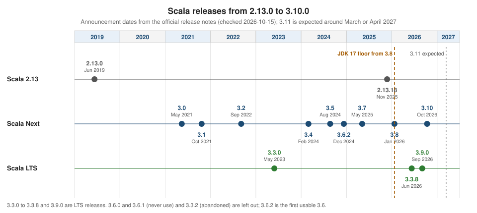

Release History & What’s New
|
This content was generated with the assistance of AI and should be verified against the official documentation before being relied on in production. |
This page is written against Scala 3.10 (3.10.0, released 2026-10-12). Every dated fact comes from the official release notes or the official download pages, checked on 2026-10-15, and the "probe" programs were compiled and run on 2026-10-16 with Scala CLI 1.17.1 (the runner that ships with Scala 3.10), mostly on JDK 26 and, for the oldest compilers, on JDK 17. Older and newer compilers (3.1.3, 3.2.2, 3.3.8, 3.4.3, 3.5.2, 3.6.2, 3.7.4, 3.8.4, 3.9.0 and 2.13.18) were fetched from Maven Central by that same runner. Where a statement comes from a release note only, the page says so.
The page is the timeline of the section. It answers four questions: what shipped in which release, which releases to avoid, how the Scala 2 forms map to Scala 3, and how each outdated form in the three reference books maps to the current language. The concepts themselves are taught on the pages linked from each row; this page does not repeat them. The release lines and how to pick one are introduced in Getting Started & Versions, the compatibility rules are in Versions, Compatibility & JDKs, upgrading a project step by step is in Upgrading Between Scala 3 Versions, and every removal with its error message is in Incompatibilities & Dropped Features.
The timeline at a glance

Three things to read from the figure. First, Scala 3 was published in May 2021 and arrived in minor releases roughly every six to nine months. Second, the 3.3 LTS was the only Long Term Support line from 3.3.0 (May 2023) until 3.9.0 (September 2026), so Scala Next releases 3.4 to 3.8 were all published while 3.3 was the LTS. Third, the JDK floor moved to 17 with 3.8, so the lines before it (3.3 LTS and 3.4 to 3.7) are the only ones that still run on JDK 8 and 11.
The dates are the dates of the official release announcements. Maven Central usually has the artifacts a few days earlier (for example the 3.10.0 artifacts are dated 5 October 2026 and the announcement 12 October 2026), so a date read from a Maven repository can differ from the one on this page.
The latest patch release of each line on the official all-versions page at the check date were:
| Line | Latest release | Remarks |
|---|---|---|
Scala 3.10 (Scala Next) |
3.10.0, 12 October 2026 |
first Scala Next after 3.9 LTS; 3.10.1 and 3.10.2 are planned, 3.11 is expected around March or April 2027 |
Scala 3.9 (LTS) |
3.9.0, 3 September 2026 |
guaranteed for at least three years; advised for publishing libraries |
Scala 3.8 |
3.8.4, 5 June 2026 |
3.8.0 and 3.8.1 had regressions, see 3.8.0 (January 2026) |
Scala 3.7 |
3.7.4 |
last line whose artifacts Scala 2.13 can still read through its TASTy reader |
Scala 3.3 (previous LTS) |
3.3.8, 10 June 2026 |
maintained for one year after 3.9.0; the only Scala 3 line that still runs on JDK 8 and 11 |
Scala 2.13 |
2.13.18, 24 November 2025 |
VirtusLab took over its maintenance on 7 October 2026 |
Scala 2.12 |
2.12.21, 11 December 2025 |
maintenance line, mainly for sbt 1.x plugins |
The version-baseline table
One row per release that changed the language or the tooling in a way the section teaches. The first column links to the official notes of the release.
| Release | Announced | What changed |
|---|---|---|
11 June 2019 |
The collections redesign Scala 3 still uses: |
|
14 May 2021 |
Scala 3: optional braces and quiet control syntax, |
|
21 October 2021 |
Experimental |
|
5 September 2022 |
Native code coverage, stricter pattern bindings, non-local returns deprecated, exports in extension clauses |
|
3.3.0 (LTS) |
30 May 2023 |
First LTS; fewer braces stable (SIP-44); |
29 February 2024 |
Deprecation warnings for legacy syntax; |
|
22 August 2024 |
|
|
10 December 2024 |
New given and context-bound syntax (SIP-64); clause interleaving (SIP-47); 3.6.0 and 3.6.1 must not be used |
|
7 May 2025 |
Named tuples stable (SIP-58); |
|
22 January 2026 (use 3.8.2 or later) |
JDK 17 required; standard library compiled by Scala 3; REPL a separate artifact with pprint; better fors (SIP-62) and |
|
3.9.0 (LTS) |
3 September 2026 |
New LTS; |
12 October 2026 |
Strict-equality pattern matching stable (SIP-67); |
The sections below go through the rows in order. Each one says what the release is remembered for, shows the changes that could be demonstrated with a compiler on this machine and says what comes only from the release note.
Before Scala 3: 2.13.0 (11 June 2019)
Scala 2.13.0 is the release whose library Scala 3 still uses. Its announcement lists four areas: the collections were
overhauled for simplicity, performance and safety (the centerpiece), the standard library gained a faster and more robust
Future plus new classes and methods, the language gained literal types, partial unification and by-name implicits, and
the compiler became 5 to 10 percent faster with deterministic output.
What this means for a Scala 3 programmer today is that most of the standard library has not changed since 2.13: the
collection hierarchy, LazyList, scala.util.Using and scala.util.chaining all come from this release. Three
things were deprecated rather than removed in 2.13.0, and the deprecated forms still compile in Scala 3.10. A program
that uses them, compiled with -deprecation:
import scala.collection.generic.CanBuildFrom
object Old {
def main(args: Array[String]): Unit = {
val t: Traversable[Int] = List(1, 2)
val s = Stream.from(1).take(2).toList
println((t, s))
}
}On Scala 2.13.18 the compiler answers:
old.scala:5: warning: type Traversable in package scala is deprecated (since 2.13.0): Use Iterable instead of Traversable
val t: Traversable[Int] = List(1, 2)
^
old.scala:6: warning: value Stream in package scala is deprecated (since 2.13.0): Use LazyList instead of Stream
val s = Stream.from(1).take(2).toList
^
2 warnings
(List(1, 2),List(1, 2))and Scala 3.10.0 says the same, in its own format, and also runs the program:
-- Deprecation Warning: old.scala:5:11
5 | val t: Traversable[Int] = List(1, 2)
| ^^^^^^^^^^^
|type Traversable in package scala is deprecated since 2.13.0: Use Iterable instead of Traversable
-- Deprecation Warning: old.scala:6:12
6 | val s = Stream.from(1).take(2).toList
| ^^^^^^
|value Stream in package scala is deprecated since 2.13.0: Use LazyList instead of Stream
2 warnings found
(List(1, 2),List(1, 2))Source: Scala 2.13.0 is now available!
scala.collection.generic.CanBuildFrom behaves the same way: it is a deprecated type whose message points to
scala.collection.BuildFrom ("Use scala.collection.BuildFrom instead"), and the apply method of BuildFrom is
deprecated in favour of newBuilder. So the accurate statement for the books is that CanBuildFrom and Traversable
are deprecated shims since 2.13.0, not removed, and new code should not use them.
The replacements, all run on 2.13.18 in one program, are LazyList, BuildFrom, Using, pipe, tap and literal types:
import scala.util.Using
import scala.util.chaining._
import scala.collection.BuildFrom
object S213 {
val one: 1 = 1 // literal type (2.13.0)
def firstTwo[A, C](xs: C)(implicit ev: C => Iterable[A], bf: BuildFrom[C, A, C]): C =
bf.fromSpecific(xs)(ev(xs).take(2)) // BuildFrom replaces CanBuildFrom
def main(args: Array[String]): Unit = {
val naturals = LazyList.from(1) // LazyList replaces Stream
println(naturals.take(5).toList)
println(firstTwo(Vector(1, 2, 3)))
println(5.pipe(_ + 1).tap(x => println(s"tapped $x")))
val n = Using(new java.io.StringReader("abc"))(_.read()).get
println(n)
println(one)
}
}List(1, 2, 3, 4, 5)
Vector(1, 2)
tapped 6
6
97
1The collections themselves are taught in Collections Overview
and Collections Architecture & Custom Collections,
and LazyList in Views, Iterators & LazyList.
Source: Scala 2.13.0 is now available!
3.0.0 (14 May 2021)
Scala 3 was announced after eight years of work, 28,000 commits and more than a hundred contributors. The announcement sends readers to the Scala 3 documentation, the "New in Scala 3" article, the Book and the migration guide, and says that one thing changed completely compared to Scala 2: macros. It also fixes the release policy: patch releases are forward and backward compatible with each other, minor releases add language features and library APIs, and "libraries built with Scala 3.0.0 will keep working with Scala 3.x.y". At the time of that post Scaladex listed 308 early adopter libraries on Scala 3 against 2597 on Scala 2.13; the 3.9 announcement says that roughly 56 percent of Scala 3 libraries now publish with 3.3 LTS.
What 3.0 contains is most of what the rest of this section teaches. Where each feature is taught:
| Feature | Page |
|---|---|
Optional braces, quiet control syntax ( |
|
|
|
|
|
Union and intersection types, opaque types, match types, type lambdas, dependent and polymorphic function types |
Union & Intersection Types, Opaque Types & Value Classes, Match Types, Type Lambdas & Higher Kinds |
Trait parameters, |
Traits & Mixins, Composition, Export & Self Types, Packages, Imports & Top-Level Definitions, Hello World & @main Methods |
|
|
Dropped features (procedure syntax, |
Three of the dropped features are easy to demonstrate, because they are syntax errors on every Scala 3 compiler. This
file uses the procedure syntax, do-while and a symbol literal; each is compiled on its own so that one error does not
hide another. On 3.3.8 and on 3.10.0 the procedure syntax gives the same message:
def proc() { println("x") }
@main def procDemo(): Unit = proc()-- [E040] Syntax Error: proc.scala:1:11
1 |def proc() { println("x") }
| ^
| '=' expected, but '{' found
1 error found
Compilation failedThe do-while loop fails with a message that does not name the feature (end of toplevel definition expected but 'do'
found, then Illegal start of toplevel definition on the next line), which is why the form is worth recognizing, and a
symbol literal such as 'sym fails with a message that tells you what to write instead: "use a string literal "sym" or an
application Symbol("sym") instead". All three still need rewriting by hand when you port a Scala 2 file; see the
incompatibilities page for the rewrite of each.
Source: Scala 3 is here!, New in Scala 3
3.1.0 (21 October 2021)
The 3.1.0 announcement is the first one that explains the compatibility model of the 3.x series, and it explains it by admitting a limitation. Scala 3.1 is backward binary compatible, since dependencies compiled with 3.0 work in 3.1 projects, but it is not forward binary compatible, since dependencies compiled with 3.1 do not work in 3.0 projects. The advice at the time to library maintainers was to test with 3.1.0 and 3.0.2 but to publish with 3.0.2, so that downstream users on either version could use the library. The same rule, unchanged, is why 3.9 LTS is the recommended publishing target today.
Highlights of the release, all from the announcement:
-
import language.experimental.saferExceptionsand thethrowsclause, a way to declare and check which exceptions a function can throw. It is still experimental today. -
A
-Wconfcompiler flag to silence warnings, turn them into errors or otherwise configure them, and the@nowarnannotation back from Scala 2.13. -
Efficient bytecode (
lookupswitch) formatchoverStringliterals. -
Simplified
Manifestsynthesis, for compatibility with Scala 2. -
Mirrorsupport for hierarchical sealed types, which type class derivation builds on. -
Scala.js 1.7.0 or later is required by 3.1.
The release also changed what compiler you can run on a current JDK. A 3.1.3 compiler started on JDK 26 stops with an error about the JDK’s own class files; on JDK 17 the same compiler works. This is the output on JDK 26, for any program:
error while loading ElementType,
class file /modules/java.base/java/lang/annotation/ElementType.class is broken, reading aborted with class java.lang.RuntimeException
bad constant pool index: 0 at pos: 1220
error while loading AccessFlag,
class file /modules/java.base/java/lang/reflect/AccessFlag.class is broken, reading aborted with class java.lang.RuntimeException
bad constant pool index: 0 at pos: 6381
2 errors found
Compilation failedThe remedy is to run the old compiler on an older JDK (17 in the probes of this page). The JDK floor moves in the other direction in 3.8 (see below). Old compilers on new JDKs are covered in Versions, Compatibility & JDKs.
Source: Scala 3.1.0 released!
3.2.0 (5 September 2022)
The headline of 3.2.0 is coverage: the compiler can now generate Scoverage data itself with the -coverage-out flag,
without a compiler plugin, so it works for Scala 3 code (later releases added // $COVERAGE-OFF$ markers in 3.3.8 and
3.8.3). The release also allowed exports in extension clauses (export richInt.* as a way to add extension methods in
bulk), code completion for refined Selectable types, better Mirror synthesis for local and inner classes and tuples up
to 22 elements, given bindings in for generators, easier construction of classes whose first parameter list is a
using clause, and the -Vprofile flags that report code complexity. The announcement also lists new experimental APIs
(MainAnnotation, newMain, TupledFunction) and a list of APIs that were stabilised.
Two changes of 3.2 matter for ordinary code because they are warnings that every project meets:
-
Pattern bindings are type checked more strictly. The reference page says that from 3.2 on, type checking rules are tightened so that warnings are reported at compile time. A
valwhose pattern is more specific than the right-hand side warns that the match may fail at run time. -
Non-local returns are deprecated. A
returninside a lambda is compiled by throwing and catching an exception, and 3.2.0 started to warn about it.
Both are demonstrated here. This program has a pattern binding that the compiler cannot prove irrefutable:
@main def pbind(): Unit =
val elems = List(1, 2, 3)
val first :: rest = elems
println((first, rest))On 3.1.3 (JDK 17) it compiles silently and prints (1,List(2, 3)). On 3.3.8 it warns, and the text of the advice changes
again in 3.8, where : @unchecked is replaced by .runtimeChecked (SIP-57, see 3.8):
-- Warning: pbind.scala:3:22
3 | val first :: rest = elems
| ^^^^^
|pattern's type ::[Int] is more specialized than the right hand side expression's type List[Int]
|
|If the narrowing is intentional, this can be communicated by adding `: @unchecked` after the expression,
|which may result in a MatchError at runtime.
|This patch can be rewritten automatically under -rewrite -source 3.2-migration.
1 warning found
(1,List(2, 3))The same program on 3.8.4 and on 3.10.0 prints the identical warning with "adding .runtimeChecked after the expression"
and "-rewrite -source 3.8-migration". The non-local return is this program:
def firstNegative(xs: List[Int]): Int =
xs.foreach { x => if x < 0 then return x }
0
@main def nlr(): Unit = println(firstNegative(List(3, -2, 5)))It prints -2 on every version, and compiles without a warning on 3.1.3. On 3.2.2 the warning points to the old API:
-- Warning: nlr.scala:2:34
2 | xs.foreach { x => if x < 0 then return x }
| ^^^^^^^^
|Non local returns are no longer supported; use scala.util.control.NonLocalReturns instead
1 warning found
-2and from 3.3 on the advice is the one that the next section introduces ("use boundary and boundary.break in
scala.util instead"). Both warnings are still warnings, not errors, on 3.10.0. See
Exceptions, boundary & Early Exit and
Extractors & Pattern Bindings.
3.3.0 LTS (30 May 2023)
3.3.0 is the first Long Term Support release and defines the model the section relies on. Scala 3.3.x is maintained for at least three years; new minor releases (3.4, 3.5 and so on) are called Scala Next, "equivalent to Java’s feature releases"; bug fixes and usability improvements from Scala Next are back-ported as 3.3.x patches, and apart from those forward and backward compatible changes the LTS is feature frozen. The LTS model does not change the compatibility guarantees: projects built with any future release can depend on a library compiled with 3.3.x.
What it added to the language and library:
-
Linting.
-Wunused:imports,privates,locals,explicits,implicits,paramsandall, and-Wvalue-discard, which catches themapwhereflatMapwas meant. -
Fewer braces. A colon can replace the braces around a method argument (SIP-44, experimental in 3.2.0 and promoted to stable). The probe is a
mapwhose lambda is on the next line:
@main def braces(): Unit =
val ys = List(1, 2, 3).map: x =>
x * 2
println(ys)On 3.2.2 it does not compile (not a legal formal parameter for a function literal, then Not found: x on the next
line); on 3.3.8 it prints List(2, 4, 6).
-
boundaryandbreak, the type-safe replacement for non-local returns. Abreakcan only be called where a matchingLabelis in scope, so the escape is checked by the compiler.
import scala.util.boundary, boundary.break
@main def bnd(): Unit =
val r = boundary:
for n <- List(1, 2, -3, 4) do
if n < 0 then break(n)
0
println(r)On 3.3.8 it prints -3. On 3.2.2 the import itself fails:
-- [E008] Not Found Error: bmin.scala:1:18
1 |import scala.util.boundary
| ^^^^^^^^
| value boundary is not a member of util-
A new default lazy val implementation, with better performance and safe under parallel access. It is the implementation whose use of
sun.misc.Unsafelater forced the changes of 3.8; the 3.9 notes explain that code compiled with Scala 3.0 to 3.7 still goes through the legacyscala.runtime.LazyValsAPI, and that Scala CLI’s experimental Sloth support rewrites such dependencies. -
A known incompatibility:
inlineparameters are no longer assumed to be stable paths, soinline def method(inline param: Outer): param.Inneris an error and the fix is to drop theinlinemodifier on that parameter.
3.3 is also the line with the longest tail. The final LTS patch at the check date is 3.3.8 (10 June 2026), which adds JDK
26 support, the // $COVERAGE-OFF$ markers, an @uncheckedOverride annotation and a -Yfuture-lazy-vals option that
produces lazy vals compatible with JDK 9 and later. The notes of 3.3.8 say that the next 3.3 release will include the
updates introduced up to the last 3.9.x before 3.10. See Optional Braces & Indentation
and Compiler Options, Linting & Errors.
3.4.0 (29 February 2024) and the missing 3.3.2
Scala 3.4.0 and 3.3.3 were released the same day, and the announcement is the clearest statement of the split. 3.3.3 "focused solely on bug fixes and usability improvements" and keeps full binary and source compatibility (the team checked that every one of more than a thousand projects that worked with 3.3.1 still worked with 3.3.3); 3.4.0 adds features and deprecates legacy mechanisms. 3.3.2 does not exist on the all-versions page: a bug in the TASTy reader made it emit TASTy files incompatible with 3.3.0 and 3.3.1, so the release was abandoned and users were told to bump to 3.3.3.
The changes of 3.4 are three groups:
-
Stabilised SIPs: SIP-54 (multi-source extension overloads: extension methods with the same name imported from different sources), SIP-53 (a more expressive type-variable syntax in quote patterns, so
case '[ (t, t, t) ]matches a three-element tuple) and SIP-56 (a proper specification for match types, which means some previously accepted match types are now illegal). -
Type inference:
foldRight((Nil, Nil))(...)now infers(List[T], List[T]), polymorphic lambdas may omit parameter types, and the compiler no longer synthesizesgivendefinitions that loop. Polymorphic lambdas compile to JVM lambdas. -
Deprecations. This is the release that made legacy syntax warn:
_as a type wildcard,private[this],var x = _,withas a type operator,xs: _*varargs and a trailing_to force eta expansion, and refutable patterns in aforgenerator need an explicitcase. The 3.9 migration section gives the rewrite:-rewrite -source:3.4-migration.
The with type operator is the clearest example, because it is one of the few deprecations that was later promoted to an
error. This file uses it for an intersection type:
trait Named { def name: String }
trait Aged { def age: Int }
def describe(x: Named with Aged): String = s"${x.name} (${x.age})"
@main def withty(): Unit =
val p = new Named with Aged { val name = "Ana"; val age = 41 }
println(describe(p))On 3.3.8 it compiles without a message and prints Ana (41). On 3.4.3, and unchanged on 3.9.0, it prints a warning and
still runs:
-- [E003] Syntax Warning: withty.scala:4:22
4 |def describe(x: Named with Aged): String = s"${x.name} (${x.age})"
| ^^^^
|with as a type operator has been deprecated; use & instead
|This construct can be rewritten automatically under -rewrite -source 3.4-migration.
|
1 warning found
Ana (41)On 3.10.0 the same text is reported as an error and compilation fails:
-- [E003] Syntax Error: withty.scala:4:22
4 |def describe(x: Named with Aged): String = s"${x.name} (${x.age})"
| ^^^^
|with as a type operator has been deprecated; use & instead
|This construct can be rewritten automatically under -rewrite -source 3.4-migration.
|
1 error found
Compilation failedNote that only Named with Aged as a type is affected: the new Named with Aged { ... } expression is the ordinary
mixin syntax and was not flagged by any of the three compilers. The progression warning in 3.4, still a warning in 3.9,
error in 3.10 is the timeline that
Incompatibilities & Dropped Features and
Upgrading Between Scala 3 Versions repeat for the other
features.
Other items of the 3.4 notes, not run here: the improved message for an incompatible TASTy version, which now says which
Scala version produced the file and which to use, a similar message for broken class files that points at the JDK
compatibility of your Scala version, compilation progress in IDEs, exporting diagnostics (including unused warnings) to
SemanticDB, the ported JVM backend parallelization, and the experimental @publicInBinary annotation that SIP-52
stabilised in 3.7.
3.5.0 (22 August 2024)
3.5.0 made Scala CLI part of the Scala distribution. The scala command installed by a package manager became the Scala
runner implemented by Scala CLI (SIP-46): it compiles, runs, tests, packages and publishes single-module projects, with
//> using directives and toolkits built in. On the Scala 3.10.0 distribution used for this page, the command reports:
$ scala --version
Scala code runner version: 1.17.1
Scala version (default): 3.10.0This is the biggest shift for the first chapter of any Scala book: the scala program that older books describe runs a
class from a classpath (scala -classpath ...), while today it runs source files. See
Scala CLI. Coursier 2.1.10 or later is needed to install it.
Other changes in 3.5:
-
Binary integer literals (SIP-42):
0b1000_0010is 130. The probe is one line,println(0b1000_0010): on 3.4.3 it does not compile (',' or ')' expected, but identifier found, with the caret underb1000_0010) and on 3.5.2 it prints130. -
Best-effort compilation (experimental): the compiler writes BETASTy files for code that does not compile, so Metals can keep offering IDE features while you type; enabled in Metals by
-Dmetals.enable-best-effort=true. -
Pipelined builds, enabled in sbt with
ThisBuild / usePipelining := true, for faster multi-module compilation. -
varin type refinements:type A = { var number: Int }is legal. -
Named tuples (SIP-58) arrived as an experimental feature behind
import scala.language.experimental.namedTuples; they became stable in 3.7. This probe is the experimental form:
import scala.language.experimental.namedTuples
@main def ntuple(): Unit =
val p = (x = 1, y = 2)
println(p.x + p.y)On 3.4.3 the import itself is reported (value namedTuples is not a member of object language.experimental) and so are
Not found: x and value x is not a member of (Unit, Unit). On 3.5.2 and on 3.7.4 the program prints 3.
-
New givens and context bounds syntax (SIP-64, experimental in 3.5, stable in 3.6.2) and a new modularity proposal (
-language:experimental.modularitywith-source:future, still experimental; it adds theSelftype member andis). -
An announcement of the given prioritization change, introduced as warnings in 3.6 and in force from 3.7.
Source: Scala 3.5.0 released!
3.6.2 (10 December 2024) and the 3.6.0 accident
3.6.0 and 3.6.1 should never be used. While 3.6.0-RC1 was being released an accident published artifacts versioned as 3.6.0 to the immutable Maven repository, so 3.6.1 was released as a hotfix to stop automatic tooling from using the broken version, and 3.6.2 is "effectively 3.6.0 for all intents and purposes". The all-versions page lists 3.6.2 as the first 3.6 release, and a project that must pin 3.6 pins 3.6.2 or later (3.6.4 exists).
The 3.6 line is the one that changed how a type class instance is written:
-
SIP-64, the new syntax for context bounds and givens.
given Order[Int]:replacesgiven Order[Int] with, a conditional given is writtengiven [T: Order] => Order[List[T]]:orgiven (config: Config) => Factory = ..., context bounds can be named and aggregated (T: {Order as o, Show}), and abstract context bounds on type members usecompiletime.deferred. The probe is the simplest form:
trait Show[T]:
def show(t: T): String
given Show[Int]:
def show(t: Int): String = s"int:$t"
@main def given36(): Unit = println(summon[Show[Int]].show(7))On 3.5.2 it fails (an identifier expected, but 'def' found and Declaration of given instance Show not allowed here:
only classes can have declared but undefined members); on 3.6.2 and on 3.10.0 it prints int:7. The old given Show[Int]
with form still compiles. See Givens & Using Clauses and
Context Bounds & Deferred Givens.
-
SIP-47, clause interleaving: type and term parameter clauses can be interleaved (
def getOrElse(k: Key)[V >: k.Value](default: V): V), which helps path-dependent APIs. See Currying & Parameter Lists. -
SIP-56 amendment: match type extractors follow aliases and singleton types.
-
Experimental in 3.6.2: SIP-62 (better fors, aliases at the start of a
for) and SIP-57 (runtimeChecked), both stable in 3.8. -
Context bounds now desugar to
usingparameters instead of implicit ones, which can change implicit resolution and affects macros and compiler plugins that inspect argument lists by flag; Java-defined annotations with more than one parameter require named arguments.
Source: Scala 3.6.2 is now available!
3.7.0 (7 May 2025)
3.7.0 stabilised two SIPs, introduced the idea of a preview feature and changed given resolution.
SIP-58, named tuples, became stable: they give names to tuple elements for construction, destructuring and pattern
matching, they allow matching a subset of case-class fields by name, and Selectable gained a Fields type member
that can be a named tuple so that structural types can be computed without macros. The program of 3.5 above, without the
import, is the stable form:
@main def ntuple(): Unit =
val p = (x = 1, y = 2)
println(p.x + p.y)It fails on 3.5.2 (Not found: x, Not found: y, value x is not a member of (Unit, Unit)) and prints 3 on 3.7.4 and on
3.10.0. See Tuples & Named Tuples.
SIP-52, binary APIs. @publicInBinary is stable. It lets an inline method access a non-public member without the
compiler generating an accessor that is not subject to binary compatibility, and it allows an inline method to call a
private constructor. -WunstableInlineAccessors (available since 3.4.0) reports the accessors that are generated.
Preview features. 3.7 introduced a stage between experimental and stable: "fully implemented and SIP-approved, but
potentially subject to small refinements before becoming stable". Preview features are guaranteed to be standardised in a
future minor release, may change in small and possibly binary incompatible ways, and are discouraged in published
libraries; the -preview compiler option enables all of them at once. The first one was SIP-62, better fors. Without the
option, 3.7.4 rejects it, and with the option it works:
@main def bf(): Unit =
val r = for
a = 1
b <- Some(2)
yield a + b
println(r)### scala 3.7.4 bf.scala
-- [E040] Syntax Error: bf.scala:3:6
3 | a = 1
| ^
| '<-' expected, but '=' found
-- [E007] Type Mismatch Error: bf.scala:3:9
3 | a = 1
| ^
|Found: (??? : => Nothing)
|Required: ?{ flatMap: ? }
...
2 errors found
Compilation failed
### scala 3.7.4 bf.scala -preview
Some(3)
### scala 3.8.4 bf.scala
Some(3)(The ... stands for two lines of the compiler’s note about implicit conversions.) The -preview flag is the one that
Scala 3.10 uses for its three preview SIPs, and the page on
Language Evolution: SIPs, Preview & Experimental
explains the whole experimental, preview, stable path.
Experimental in 3.7: SIP-61 (@unroll) and SIP-68 (referenceable package objects). Both became preview features in 3.10.
The given prioritization change. Announced in 3.5 and warned about in 3.6, the new rule applies from 3.7: given search
now picks the most general instance that satisfies the request instead of the most specific one. The probe uses a
covariant type class and asks for Pick[Animal] when both Pick[Animal] and Pick[Dog] are available:
trait Pick[+T]:
def name: String
class Animal
class Dog extends Animal
given forAnimal: Pick[Animal] with
def name = "Pick[Animal]"
given forDog: Pick[Dog] with
def name = "Pick[Dog]"
def which[T](using p: Pick[T]): String = p.name
@main def prio(): Unit =
println(which[Animal])### scala 3.6.2 prio.scala
-- Warning: prio.scala:15:23
15 | println(which[Animal])
| ^
| Given search preference for Pick[Animal] between alternatives
| forDog.type
| and
| forAnimal.type
| will change.
| Current choice : the first alternative
| New choice from Scala 3.7: the second alternative
1 warning found
Pick[Dog]
### scala 3.7.4 prio.scala
Pick[Animal]
### scala 3.7.4 prio.scala -source:3.5
Pick[Dog]
### scala 3.7.4 prio.scala -source:3.7-migration
-- [E205] Potential Issue Warning: prio.scala:15:23
15 | println(which[Animal])
| Given search preference for Pick[Animal] between alternatives
| forDog.type
| and
| forAnimal.type
| has changed.
| Previous choice : the first alternative
| Choice from Scala 3.7 : the second alternative
|
| Suppress this warning by choosing -source 3.5, -source 3.7, or
| by using @annotation.nowarn("id=205")
1 warning found
Pick[Animal]The result changed silently between 3.6.2 and 3.7.4 for this program, which is why -source:3.7-migration exists: it
keeps the new rule but prints the warning above wherever the result differs, and -source:3.5 keeps the old rule.
Explicit arguments for implicit parameters. From 3.7 the compiler warns when an argument is passed to an implicit
parameter list without using:
def scale(x: Int)(implicit factor: Int): Int = x * factor
@main def explicit2(): Unit =
println(scale(10)(3))3.6.2 prints 30; 3.7.4 prints 30 after the warning Implicit parameters should be provided with a `using clause.,
which `-rewrite -source:3.7-migration fixes.
Other items from the release notes, not run here: the expression compiler behind the Metals and IntelliJ debug consoles
moved into the compiler repository, the presentation compiler shows the expected type of a type hole on hover, the
experimental subset of the Quotes API gained apply methods for import selectors and summonIgnoring, and
the standard library moved to 2.13.16, where .tail and .init on the empty string throw instead of returning it.
Sources: Scala 3.7.0 released!, Scala 3.9 LTS released! (the section "Coming from Scala 3.3 LTS")
3.8.0 (January 2026)
3.8 is the release that modernises the foundations. The announcement is dated 22 January 2026 and carries a warning
that is part of the history: a runtime regression was detected after 3.8.0 was published (JVM linkage errors at runtime
that could affect Scala 3 users who execute Scala 2.13 libraries and uses of specialized members of the standard
library), so "please use Scala 3.8.1 instead"; two further bugs in 3.8.0 and 3.8.1 (incorrect behaviour of some for
comprehensions and a compile failure with some Java standard library calls) were announced as fixed in 3.8.2, released
on 24 February 2026. That is why this section tells you to use 3.8.2 or later; the last 3.8 release is 3.8.4 (5 June
2026), which includes fixes from the security audit of the Scala codebase (hardened TASTy parsing, a Scaladoc XSS fix).
What 3.8 changed:
-
JDK 17 is required to compile and run. The reason given is JDK 26 and later, which restrict the
sun.misc.Unsafefunctionality that the old lazy-vals implementation used; the lazy vals now useVarHandle. 3.3 LTS continues to produce JDK 8 bytecode, and the notes recommend 3.3.8 and its-Yfuture-lazy-valsflag for libraries that must support an older JVM. -
The standard library is compiled with Scala 3. It is the same API as 2.13, and the release is binary compatible, but the context bounds in library classes now desugar to
giveninstead ofimplicit, which makes explicit arguments needusing. The probe isArray.empty(ClassTag.Int):
import scala.reflect.ClassTag
@main def ctag(): Unit =
val xs = Array.empty(ClassTag.Int)
println(xs.length)### scala 3.7.4 ctag.scala
-- Warning: ctag.scala:4:32
4 | val xs = Array.empty(ClassTag.Int)
| ^^^^^^^^^^^^
|Implicit parameters should be provided with a `using` clause.
|This code can be rewritten automatically under -rewrite -source 3.7-migration.
|To disable the warning, please use the following option:
| "-Wconf:msg=Implicit parameters should be provided with a `using` clause:s"
1 warning found
0
### scala 3.8.4 ctag.scala
-- [E172] Type Error: ctag.scala:4:22
4 | val xs = Array.empty(ClassTag.Int)
| ^
| No ClassTag available for T
|
| where: T is a type variable
1 error found
Compilation failedThe fix is Array.empty(using ClassTag.Int) or, better, Array.empty[Int]. The migration is the reason that the notes
recommend running 3.7.4 with -source:3.7-migration -rewrite before the bump. This is also the boundary at which Scala
2.13’s -Ytasty-reader stops being able to read Scala 3 libraries (it works up to 3.7), and at which
scala.reflect.runtime.universe can fail when initialised against the Scala 3 standard library, the best-known case being
Apache Spark; both are covered in Upgrading Between Scala 3 Versions.
* App is deprecated. trait App has been deprecated since 3.8.0; on 3.10.0 and on 3.9.0 object Main extends App: with
-deprecation prints trait App in package scala is deprecated since 3.8.0: Support for trait App is deprecated in Scala 3
and the program still prints its output. Use @main, see
Hello World & @main Methods.
* The REPL is a separate artifact (scala3-repl) rendered with fansi and pprint, so long values no longer dump as one
unreadable line.
* SIP-62, better fors, is stable. Aliases may start a for, and a final map is omitted when it would be the identity
(see the probe in 3.7). 3.8.2 added a warning for a for with several val bindings and an overloaded map, because
the result type can change: the 3.8.2 notes show a Map iterated with two aliases that yields
List43,29), (43,30), (43,31 on 3.7 and Map(43 -> 31) on 3.8.
* SIP-57, runtimeChecked, is stable. It replaces the : @unchecked ascription:
@main def rc(): Unit =
def port(name: String): Option[Int] = if name == "http" then Some(80) else None
val Some(p) = port("http").runtimeChecked
println(p)On 3.7.4 the compiler reports method runtimeChecked is marked @experimental and on 3.8.4 the program prints 80.
-
intoin preview (SIP-71, see 3.9). On 3.8.4 the compiler stops withtype into is marked @previewandPreview definition may only be used when compiling with the -preview compiler flagunless-previewis passed. -
Experimental additions: SIP-67 (strict equality pattern matching), SIP-70 (flexible varargs,
multiSpreads), SIP-75 (single-line lambdas after:,relaxedLambdaSyntax), match expressions with sub-cases, and, from 3.8.3, asafemode for capability-safe code. 3.8 also opened a feature freeze for 3.9: "any codebase using Scala 3.8 should not require any additional changes to use Scala 3.9 LTS". -
3.8.3 (31 March 2026) added the optional Scala 2 bytecode optimizer (
-opt,-opt-inline) and local coverage exclusions with// $COVERAGE-OFF$. 3.8.4 added:helpfor every compiler setting (for example-Wunused:help). -
Tooling floors named in the notes: sbt 1.11.5 minimum and 1.12.0 recommended, Scala CLI 1.9.0 minimum and 1.11.0 recommended, Mill 1.0.5 minimum, scalafmt 3.10.1 minimum, Metals 1.6.4 recommended.
Sources: Scala 3.8 released!, Scala 3.8.2, Scala 3.8.3, Scala 3.8.4
3.9.0 LTS (3 September 2026)
3.9.0 opens the new LTS. It "succeeds Scala 3.3 LTS as the recommended baseline for library authors and conservative production users", it is guaranteed to be maintained for at least three years, and 3.3 LTS stays actively maintained for one year after 3.9.0 (3.3.9 is planned within a month of the announcement). Because the feature freeze held, 3.9 has the same feature set as 3.8 apart from what was promoted. Library authors should read one sentence of the announcement as a rule: artifacts built with 3.9 cannot be consumed by Scala 3.3 projects, so moving from 3.3 LTS to 3.9 LTS is a minor-version publishing decision for the libraries you maintain. The notes give the Open Community Build numbers behind the migration: about 1,780 of nearly 2,000 projects build on 3.9 with no or minimal changes.
-
SIP-71,
into, is stable. It marks selected parameters or types as accepting implicit conversions without animport scala.language.implicitConversionsat the call site. The probe (3.8 and 3.9 notes) is:
import scala.Conversion.into
def concat[A](xs: List[A], ys: into[IterableOnce[A]]): List[A] = xs ++ ys
given Conversion[Array[Int], IterableOnce[Int]] = _.iterator
@main def intoDemo(): Unit =
println(concat(List(1, 2), Array(3, 4)))Source: Scala 3.9 LTS released!
3.7.4: type into is marked @experimental. 3.8.4 without -preview: type into is marked @preview. 3.8.4 with -preview
and 3.9.0 without any flag: List(1, 2, 3, 4). See
Conversions, into & Implicit Resolution.
-
Documentation snippets can declare the errors they expect. Scaladoc compiles the snippets it finds in documentation, and 3.9 lets a snippet mark the lines that must fail with
// errorand the warnings with// warn; every diagnostic must be accounted for. See Scaladoc. -
Scala CLI updates: the REPL can start JShell (
scala repl --jshell), tests can use JUnit 5,exportcan target sbt 2, WebAssembly is supported experimentally, Ammonite support is dropped, and experimental built-in support for Sloth rewrites dependencies compiled with the old lazy val bytecode. -
Scala.js 1.22.0 is bundled, and its WebAssembly backend is stable (it targets a JavaScript host such as Node.js, Deno, Bun or a browser). The Scala.js version is fixed for the whole 3.9 LTS line because the backend is part of the compiler.
-
Inaccessible companion implicits are deprecated. A given defined in a private companion object is no longer an eligible instance at the call site, because the specification has always required that an eligible implicit be accessible. 3.9 reports every such resolution under
-deprecation, and 3.10 stops finding them. The probe:
object api:
class Config
private object Config:
given Config = new Config
def describe(using Config): String = "configured"
@main def companion(): Unit =
println(api.describe)### scala 3.9.0 companion.scala
there was 1 deprecation warning; re-run with -deprecation for details
1 warning found
configured
### scala 3.9.0 companion.scala -deprecation
-- Deprecation Warning: companion.scala:9:22
9 | println(api.describe)
| ^
|Usage of implicit given instance given_Config defined in object Config, which is not accessible here. In Scala 3.10, this implicit will no longer be found.
1 warning found
configured
### scala 3.10.0 companion.scala
-- [E172] Type Error: companion.scala:9:22
9 | println(api.describe)
| ^
|No given instance of type api.Config was found for parameter x$1 of method describe in object api
1 error found
Compilation failed-
The 3.3 to 3.9 summary. The announcement summarises each minor between 3.3 and 3.9 (breaking changes, new stable features, notable changes) and a recommended upgrade order: build tool first, then JDK 17 or later on the current Scala version, then Scala.js, then Scala, then libraries. The list of
-source:3.x-migrationrewrites to apply in order is the core of Upgrading Between Scala 3 Versions.
On 3.9, the older preview and experimental gates matter in a way that is easy to forget when reading 3.10 material: the
three features that are preview features in 3.10 were still experimental in 3.9. @unroll on 3.9.0 is rejected with
class unroll is marked @experimental: under review as part of SIP-61 and needs -experimental (or an experimental
import), after which the same program prints Hello, Ana!; SIP-75 (xs.map: v => v + 1) fails on 3.9.0 with not a legal formal parameter for a function literal, and referenceable
package objects fail too, as the next section shows.
Source: Scala 3.9 LTS released!
3.10.0 (12 October 2026)
3.10.0 is the first release of the Scala Next series that follows 3.9 LTS, and the first release that removes legacy features. Binary compatibility is preserved (libraries compiled with earlier Scala 3 versions keep working, including those that used features now removed), but source that still uses the removed features must be updated. Because cross-compilation between Scala 2 and 3.10 is no longer supported, the notes expect cross-compiled libraries to stay on 3.9 LTS indefinitely; check a 3.10 artifact with MiMa 1.2.1 or later, which adds 3.9 and 3.10 support.
Stable: SIP-67. Under strictEquality, x == y still needs a CanEqual, but match on an enum or case object no longer
does. The probe:
import scala.language.strictEquality
enum Foo:
case Bar
case Baz(f: Int => Int)
def eval(x: Foo): Int = x match
case Foo.Bar => 0
case Foo.Baz(f) => f(0)
@main def strictDemo(): Unit = println(eval(Foo.Baz(_ + 1)))On 3.7.4 and on 3.9.0 it fails with Values of types Foo and Foo cannot be compared with == or != (under the case Foo.Bar
pattern); on 3.10.0 it prints 1. See Pattern Matching and
Multiversal Equality.
Preview features (-preview). SIP-61 (@unroll), SIP-75 (relaxed lambda syntax) and SIP-68 (referenceable package
objects) moved from experimental to preview, and the experimental language imports that previously gated them are
deprecated. SIP-74 (partial function literals with parentheses) is a fourth preview feature on 3.10.0: the SIP page says
it is a preview feature in 3.10.0 and will be on by default in the next minor release, although the SIP list calls it
"shipped" and the reference’s preview index does not list it yet. Three probes, each compiled without and with the flag:
@main def relaxed(): Unit =
val xs = Option(2)
val ys = xs.map: v => v + 1
println(ys)### scala 3.10.0 relaxed.scala
-- Error: relaxed.scala:3:11
3 | val ys = xs.map: v => v + 1
| ^^^^^^^^^
| not a legal formal parameter for a function literal
-- [E006] Not Found Error: relaxed.scala:3:24
3 | val ys = xs.map: v => v + 1
| ^
| Not found: v
2 errors found
Compilation failed
### scala 3.10.0 relaxed.scala -preview
Some(3)The same probe with package lib and package object json (a val api = lib.json that treats the package object as a
value) fails on 3.9.0 with package lib.json is not a value, on 3.10.0 with Preview package object values may only be
used when compiling with the -preview compiler flag, and prints 42 on 3.10.0 with -preview. The SIP-74 probe
xs.collect(case (a, b) if b > 2 => a) fails on 3.9.0 and on 3.10.0 with expression expected but case found and prints
List(3) with -preview. @unroll behaves differently: on 3.10.0 the one-parameter probe compiled and printed
Hello, Ana! without the flag, which is the same observation recorded in
Versions, Compatibility & JDKs; pass -preview
anyway.
Breaking changes. The notes list them; the ones demonstrated here:
-
A with Bas a type is an error (probe in 3.4 above);-source:3.4-migration -rewriterewrites it toA & B, and in typed patterns the intersection must be parenthesised (case x: (A & B) =>). -
Givens in inaccessible companions are no longer found (probe in 3.9 above).
-
thisis illegal in top-level definitions.val self = thisat the top of a file printsokfor the rest of the program on 3.9.0 and fails on 3.10.0:
-- Error: toplevelthis.scala:1:11
1 |val self = this
| ^^^^
| Top-level definitions cannot refer to this
1 error found-
The primitive
Rich*wrappers (runtime.RichIntand the others) are gone:until,to,absandmaxare extension methods in the companions ofInt,Longand the other primitive types, anda -> bis an inline extension method;Predef.ArrowAssocis deprecated and no longer an implicit conversion. A DSL that defines->through an implicit class should change it to an extension method. Macros that inspect the old trees need updating; ZIO 2.1.26 and other macro-heavy libraries published releases for that reason. -
Java generic signatures use boxed types for primitive type arguments, so MiMa may report
IncompatibleSignatureProblemwhen you republish, and-Xmax-fuelreplaces catchingStackOverflowError: very deep types now reportRecursion limit exceeded(default fuel 550) and may need-Xmax-fueland-Xss. See Compiler Options, Linting & Errors.
New in the language and library. Java records can be used as extractor patterns, \s is a string escape for a space, and
IArray has Factory, IsSeq and BuildFrom instances. The two probes:
### scala 3.9.0 sesc.scala
-- Error: sesc.scala:2:13
2 | println("a\sb")
| ^
| invalid escape character
1 error found
### scala 3.10.0 sesc.scala
a b
a\sb(The second line is println(raw"a\sb"), where raw keeps the two characters.) For the record pattern, a Point.java
holding public record Point(int x, int y) {}, compiled with javac and put on the class path, and the program
Point(3, 4) match case Point(x, y) => println(s"point $x,$y") fail on 3.9.0 (Point cannot be used as an extractor in a
pattern because it lacks an unapply or unapplySeq method with the appropriate signature) and print point 3,4 on 3.10.0.
See Using Java from Scala.
Tools in 3.10. The distribution bundles Scala CLI 1.17.1 (Java instance main methods without a class on JDK 25 and later,
//> using resource, and the lts version tag resolving to the 3.9 series), the REPL accepts //> using dep, //> using
toolkit and //> using jar directives and gained :save and :replay, and Scala is now also published as .deb and
.rpm packages. Scala CLI, the REPL and the packages are described in
Scala CLI and Installing Scala;
the REPL additions come from the release notes only and were not run here.
What is next. The notes say that 3.10.1 has its release branch cut and 3.10.2 will follow, and that development then moves to 3.11, expected around March or April 2027. 3.9 LTS remains the recommended publishing baseline.
Source: Scala 3.10 released!, SIP-74
Tool and ecosystem milestones
The tools move on their own schedule. Those that the section teaches, with the dates that the official sources give:
| Tool | Date | Milestone |
|---|---|---|
Scala CLI as |
22 August 2024 (3.5.0) |
The default runner of the distribution; 1.17.1 is bundled with 3.10 and 1.18.0 was the latest at the check date |
Scala Toolkit |
checked 2026-10-15 |
Version 0.9.2 ( |
sbt 2 |
29 June 2026 |
Announced as stable after five years of development; build definitions are written in Scala 3 (3.8.4) and need JDK 17; the announcement names |
Scala.js 1.22.0 |
3.9.0 (3 September 2026) |
Bundled with the 3.9 LTS line; stable WebAssembly backend; Scala Native 0.5.12 was the latest at the check date |
Scala 2 maintenance |
7 October 2026 |
VirtusLab assumed responsibility for maintaining Scala 2.12 and 2.13, with the Scala Center and the Scala Core Team; the next releases planned are 2.12.22 and 2.13.19 |
Akka and Pekko |
Akka 2.7 (2022) |
Akka moved to the Business Source License; the Apache-licensed fork is Apache Pekko. Lagom is no longer maintained (security patches ended on 1 July 2024) |
Scala 3.8 tool floors |
22 January 2026 |
sbt 1.11.5 (1.12.0 recommended), Scala CLI 1.9.0 (1.11.0 recommended), Mill 1.0.5, scalafmt 3.10.1, Metals 1.6.4 |
The libraries and frameworks of the ecosystem, with their current versions, are collected in Ecosystem, and building with sbt, Mill and Scala CLI is described in sbt & Build Tools. The Toolkit modules are taught in Testing with MUnit, Files & Processes with OS-Lib, JSON with uPickle and HTTP Client with sttp.
Scala 2 to Scala 3
The table maps what a Scala 2.13 programmer wrote to what Scala 3 offers, with the release in which the Scala 3 form arrived or changed. The old form usually still compiles for migration, unless the row says it is removed.
| Area | Scala 2.13 form | Scala 3 form | Since |
|---|---|---|---|
Block structure |
Braces everywhere; |
Optional braces and indentation; |
3.0, colon 3.3 |
Contextual parameters |
|
|
3.0 |
Type class instances |
|
|
3.0, new syntax 3.6 |
Extending types |
|
|
3.0 |
Conversions |
|
|
3.0, |
View bounds |
|
Removed; use a context bound or a |
3.0 |
Enumerations |
|
|
3.0 |
Compound and union types |
|
The intersection type |
3.0, |
Wildcards |
|
|
3.0, |
Type lambdas |
|
|
3.0 |
Entry point |
|
|
3.0 |
Package objects |
|
Top-level definitions; package objects still compile and become referenceable values with |
3.0, preview 3.10 |
Value classes |
|
Opaque types (value classes still work) |
3.0 |
Macros |
|
|
3.0 |
Exceptional exit |
|
|
deprecated 3.2, replacement 3.3 |
Pattern bindings |
|
Warning unless irrefutable; |
3.2, |
|
Aliases only after a generator |
Aliases may start a |
preview 3.7, stable 3.8 |
Tuples |
|
Named tuples |
experimental 3.5, stable 3.7 |
Binary literals |
None |
|
3.5 |
Running code |
|
|
3.5 |
Standard library |
The 2.13 library, compiled by Scala 2 |
The same API, compiled by Scala 3 since 3.8; |
3.8, 3.10 |
Reading each other’s libraries |
Scala 2.13 reads Scala 3 libraries with |
Scala 3 reads 2.13 libraries; 2.13 can read Scala 3 libraries only up to 3.7 |
3.8 boundary |
Cross-building |
Cross-compiling a source tree for 2.13 and Scala 3 |
Possible up to 3.9 LTS; not supported on 3.10 |
3.10 |
Each row is taught on its own page: start from Migrating from Scala 2 and Scala 2 & Scala 3 Compatibility.
Legacy to modern: where the books are outdated
The three books consulted for this section are Programming Scala 3rd edition (PS3), Learn Scala Programming (LSP) and Professional Scala (PRO). Each was written before some of the changes above. The table collects every outdated form with the current state on 3.10, the release where it changed, and the page that teaches the current form. Chapter references are the issue’s own mapping; the table contains no book text, only the forms and their replacements.
| Book statement or form | Current Scala 3.10 | Since | Page |
|---|---|---|---|
|
|
3.0 |
|
|
|
3.0 |
|
|
|
3.0, 3.9 |
|
View bounds |
Removed. Use a |
3.0 |
|
PS3’s |
The 3.6 given syntax (SIP-64): |
3.6 |
|
Given resolution examples (PS3 ch. 5; LSP ch. 4) |
3.7 prefers the most general given (probe above). 3.10 no longer finds givens in inaccessible companions. |
3.7, 3.10 |
|
PS3 ch. 16 view-bound example with |
Pre-3.0 Dotty syntax, an error in the book. It is |
3.0 |
|
PS3 predicts legacy syntax warns or fails "in 3.1": |
Deprecation warnings arrived in 3.4 ( |
3.4, 3.10 |
|
|
Standard since 3.3 |
3.3 |
|
|
|
3.3 |
|
|
Since 3.5 |
3.5, 3.9 |
|
JDK 8+ with 11 or 15 recommended (PS3 ch. 1); JDK 8 (PRO); JDK 8-11 (LSP) |
Scala 3.8 and later need JDK 17 or later. 3.3 LTS still runs on JDK 8. |
3.8 |
|
"The Scala 3 standard library is the 2.13 library" (PS3 ch. 1, 14) |
Same API, but since 3.8 it is compiled by Scala 3. The REPL is a separate artifact. |
3.8 |
|
Polymorphic function types cannot take context bounds or |
They can in recent 3.x |
3.x |
|
Compound types |
|
3.0, 3.10 |
|
Existential types |
Dropped. Use |
3.0 |
|
|
|
3.0, warns 3.4 |
|
Type lambdas |
|
3.0 |
|
Type projections |
Allowed only on concrete prefixes |
3.0 |
|
Procedure syntax |
All dropped. Use |
3.0 |
|
|
|
3.0 |
|
|
2.13 hierarchy ( |
2.13.0 |
|
“Option` extends `Traversable” (PRO ch. 5) |
Wrong even in 2.12, where an implicit conversion applied. |
2.13.0 |
|
|
|
2.13.0 |
|
Scala 2 def macros, quasiquotes, |
|
3.0 |
|
Structural types work out of the box (PRO ch. 5) |
Reflective access needs |
3.0 |
|
Akka as the default actor/streams toolkit (LSP ch. 11-14; PRO ch. 7; PS3 ch. 19) |
Akka has been under the Business Source License since 2.7 (2022). The Apache-licensed fork is Apache Pekko. Cats Effect, ZIO and Ox are common alternatives. Ecosystem page only. |
2022 |
|
|
Out of scope; ecosystem page only. Named here so readers of the book know these APIs changed. |
n/a |
|
Lagom and ConductR (LSP ch. 15) |
End of life (Lagom 2024-07-01). Not documented. |
2024 |
|
sbt 1.1-1.2, ENSIME, Ammonite, Mill under |
sbt 1.x and sbt 2.0 (announced 2026-06-29); Metals or IntelliJ; Scala CLI; Mill under |
2026 |
|
ScalaTest 3.0 |
ScalaTest 3.2 |
n/a |
|
"Dotty" as the future compiler (PRO, LSP) |
Scala 3.0 shipped on 2021-05-14 |
3.0 |
|
SPP (Scala Platform Process) (PRO ch. 8) |
Defunct. Use SIPs and the Scala Toolkit. |
n/a |
The rows show a pattern worth knowing before reading a book: the further a row is toward the top, the more likely the old form still compiles and only the style has changed; the further toward the bottom, the more likely the library or the tool itself has gone. The same statements are collected from the angle of the dropped features in Incompatibilities & Dropped Features.
Experimental, preview and stable at the check date
The table repeats, as a release-history view, the stage of the features that moved during 3.5 to 3.10. The definitions of the three stages and the full lists are in Language Evolution: SIPs, Preview & Experimental.
| Feature | Introduced | Stable | On 3.10.0 |
|---|---|---|---|
Named tuples (SIP-58) |
3.5 experimental |
3.7 |
stable |
Given and context-bound syntax (SIP-64) |
3.5 experimental |
3.6 |
stable |
Better fors (SIP-62) |
3.6.2 experimental, 3.7 preview |
3.8 |
stable |
|
3.6.2 experimental |
3.8 |
stable |
|
3.8 preview |
3.9 |
stable |
Strict equality pattern matching (SIP-67) |
3.8 experimental |
3.10 |
stable |
|
3.7 experimental |
not yet |
preview |
Referenceable package objects (SIP-68) |
3.7 experimental |
not yet |
preview |
Relaxed lambda syntax (SIP-75) |
3.8 experimental |
not yet |
preview |
Partial function literals with parentheses (SIP-74) |
3.10 preview |
expected in the next minor release |
preview |
Flexible varargs (SIP-70) |
3.8 experimental |
not yet |
experimental |
Dedented string literals (SIP-72) |
3.10 experimental |
not yet |
experimental |
Which version to use
A short decision list, taken from the release notes and the compatibility page:
-
Publishing a library: 3.9 LTS (3.9.0 or the latest 3.9 patch). Stay on 3.3 LTS only while your users are stuck on it, and never compile with a Scala Next release unless you rely on a feature that exists only there.
-
Writing an application: 3.10 (Scala Next), or 3.9 LTS for the most conservative path. Any Scala 3 minor can be mixed with libraries built by an older Scala 3 minor, but not the other way round.
-
On JDK 8 or 11: 3.3.8 LTS or 3.7.4. From 3.8 on, JDK 17 or later is required.
-
With Scala 2.13 consumers of your Scala 3 library: stay on 3.7 or earlier, or publish a 2.13 artifact, because the TASTy reader of 2.13 cannot read libraries built by 3.8 or later.
-
Never: 3.6.0 and 3.6.1, which should never be used, and 3.8.0 and 3.8.1, which had regressions; 3.3.2 does not exist.
Pitfalls
-
Reading a date from Maven Central instead of the announcement. Artifacts are published days before the news item (3.9.0 on 26 August 2026 against the announcement of 3 September 2026), so a table built from repository timestamps disagrees with the official dates.
-
Running an old compiler on a new JDK. The 3.1.3 compiler on JDK 26 stops with "class file … is broken" for the JDK’s own classes; use the JDK that matches the compiler (17 for 3.1 to 3.7 in the probes here), and use JDK 17 or later from 3.8.
-
Treating "deprecated" as "removed".
Traversable,StreamandCanBuildFromstill compile on 3.10.0, with warnings;A with Band a given in an inaccessible companion do not. The warning release and the error release are different, and the table of the 3.9.0 notes is the way to see which is which. -
Treating a preview feature like a stable one.
-previewfeatures can change incompatibly before they are stabilised, and are discouraged in published libraries; a library that needs one should say so in its documentation. -
Taking the experimental import for the preview flag. On 3.10 the old experimental imports for the three promoted features are deprecated and point to
-preview; the-experimentalflag is a different, much wider switch that also opts everything marked@experimentalinto your build. -
Upgrading libraries before the compiler. A newer library may need a newer compiler; the recommended order is build tool, JDK, Scala.js, Scala, then libraries.
-
Believing a tutorial about the Toolkit. The official tutorial pages show Toolkit 0.7.0, sttp 4.0.0-RC1 and uPickle 4.1.0 while 0.9.2 is current. Likewise, a book that starts programs with
Apppredates its deprecation in 3.8.0.
What was run and what was not
Run on 2026-10-16 with Scala CLI 1.17.1 (scala run --server=false -S <version> File.scala, with the compiler fetched from
Maven Central): the probes for binary literals (3.4.3 and 3.5.2), named tuples (3.4.3, 3.5.2, 3.7.4 and 3.10.0), better
fors (3.6.4, 3.7.4 with and without -preview, 3.8.4), boundary (3.2.2 and 3.3.8), non-local returns (3.1.3, 3.2.2, 3.3.8
and 3.10.0), pattern bindings (3.1.3, 3.3.8, 3.8.4 and 3.10.0), fewer braces (3.2.2 and 3.3.8), A with B (3.3.8, 3.4.3, 3.9.0
and 3.10.0), the SIP-64 given syntax (3.5.2, 3.6.2 and 3.10.0), given prioritization (3.6.2, 3.7.4, 3.10.0 and with
-source:3.5 and -source:3.7-migration), explicit arguments to implicit parameters (3.6.2 and 3.7.4), Array.empty(ClassTag.Int)
(3.7.4 and 3.8.4), runtimeChecked (3.7.4 and 3.8.4), into (3.7.4, 3.8.4, 3.9.0), inaccessible companion givens (3.9.0 with and
without -deprecation, 3.10.0), this at top level (3.9.0 and 3.10.0), the \s escape (3.9.0 and 3.10.0), SIP-67 (3.7.4, 3.9.0 and
3.10.0), @unroll (3.9.0 with and without -experimental, 3.10.0 with and without -preview), SIP-75, SIP-68 and SIP-74 (3.9.0 and
3.10.0 with and without -preview), Java record patterns (3.9.0 and 3.10.0 with the class compiled by javac), the Scala 2.13.18
program and the deprecations of Traversable, Stream and CanBuildFrom (2.13.18 and 3.10.0), the three dropped syntaxes
(3.3.8 and 3.10.0), and scala --version. The 3.1.3 and 3.2.2 probes ran on JDK 17; the others on JDK 26.
Not run here, taken from the release notes and the official pages: the JDK 17 floor of 3.8 on a JDK older than 17 (no such JDK
is installed on this machine), the REPL features of 3.8 to 3.10 (:dep, //> using in the REPL, :save, :replay), the Scala
CLI features (JShell, JUnit 5, sbt 2 export, Sloth, WebAssembly), Scala.js 1.22 and its Wasm backend, native coverage and
// $COVERAGE-OFF$, best-effort compilation, pipelined builds, the 3.8.3 optimizer, -Xmax-fuel, the Scala 2.13 TASTy-reader
boundary, MiMa, sbt 2, the .deb and .rpm packages, and the statements about Akka, Pekko and Lagom, which are cited from
their own pages.